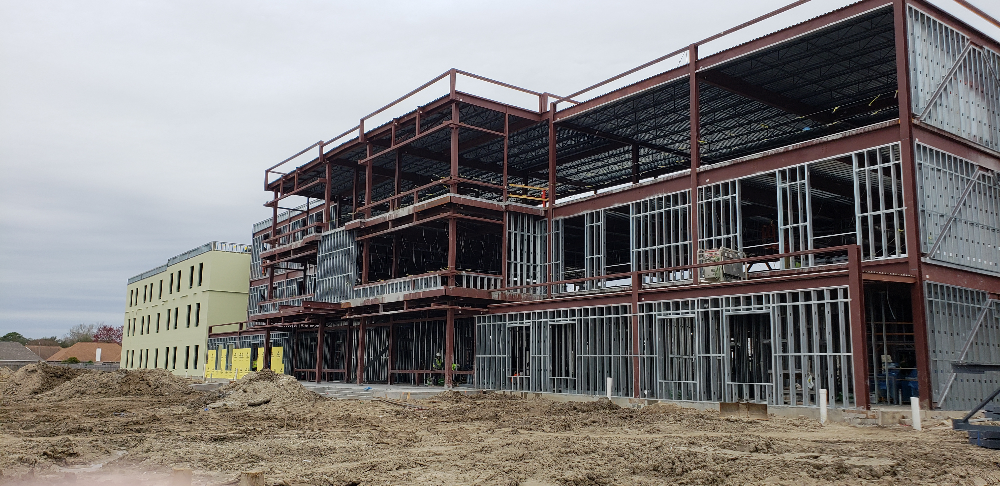
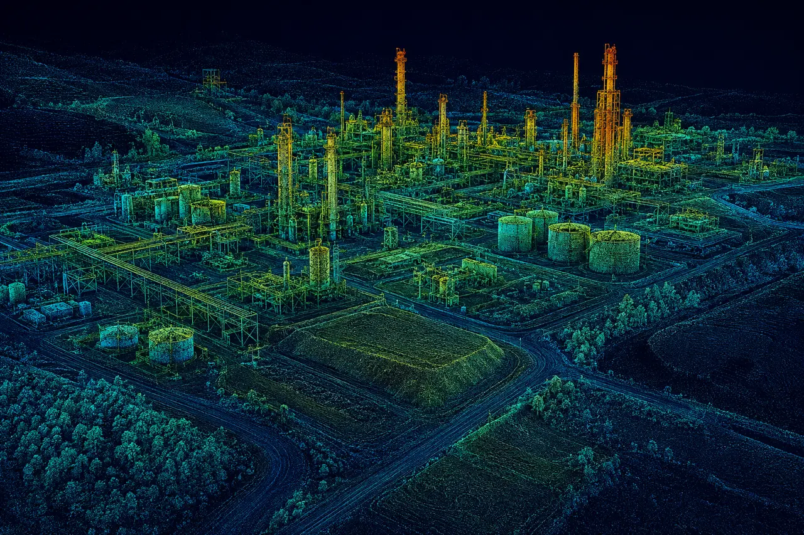
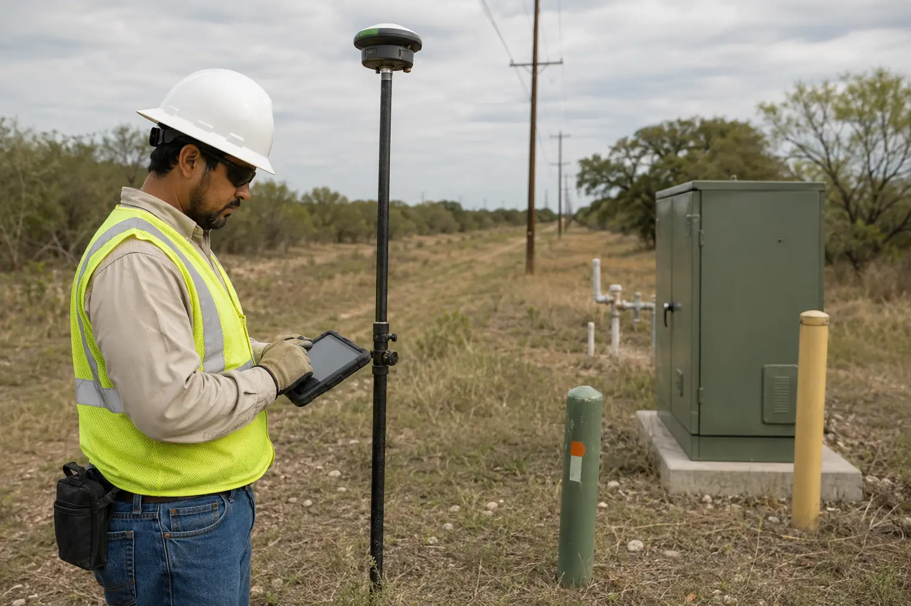
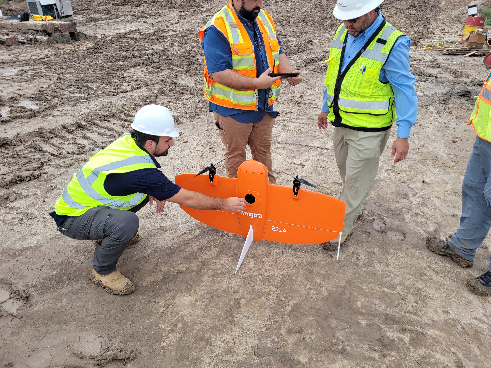
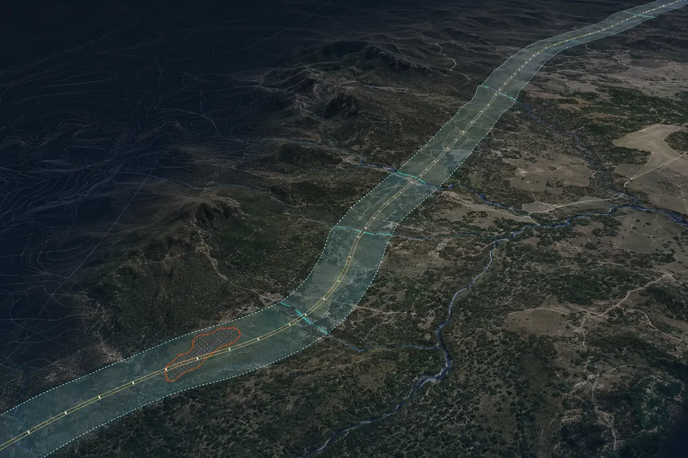
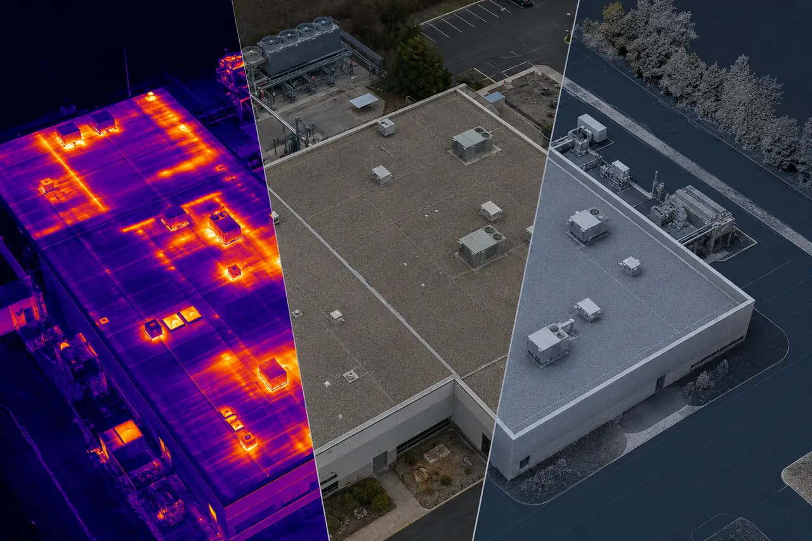

CONSTRUCTION QUANTITIES
Earthwork & Stockpile Tracking
Repeatable site capture, surface comparisons, stockpile volumes, cut/fill summaries, and clear visuals for progress reviews and pay-app support.

SAN ANTONIO FIELD SUPPORT • REMOTE PRODUCTION NATIONWIDE
We turn drone imagery, LiDAR, scans, and existing project data into earthwork quantities, progress comparisons, terrain models, and client-ready CAD/GIS files. Get field support across South and Central Texas, with remote production for teams anywhere.

WHAT WE DELIVER
Send a site, dataset, or recurring workload. We’ll agree on the inputs, outputs, coordinate and naming standards, QA steps, and turnaround before production starts.
CONSTRUCTION QUANTITIES
Repeatable site capture, surface comparisons, stockpile volumes, cut/fill summaries, and clear visuals for progress reviews and pay-app support.

DATA PRODUCTION
Classification, cleanup, registration support, QA/QC, terrain models, contours, and files prepared to your project standard.
PRODUCTION OVERFLOW
Convert field and client data into organized mapping, asset layers, corridor exhibits, CAD linework, and repeatable QA packages.

FIELD + PROCESSING
Local aerial and site documentation, orthomosaics, 3D capture, and progress imagery—with remote processing when your team already has the data.

EXAMPLE WORK PACKAGES
These examples show the kind of bounded production work Wise can take on. Scope, accuracy, and acceptance criteria are set with the client for each project.
CONSTRUCTION + MATERIALS
Track grading, quantities, stockpiles and site change with repeatable aerial data.
ORTHOMOSAIC • CONTOURS • VOLUMES

DEMONSTRATION VISUALIZATIONENERGY + INFRASTRUCTURE
Organize imagery, terrain and GIS features for access, crossings and field coordination.
CORRIDOR MOSAIC • GIS • TERRAIN

DEMONSTRATION VISUALIZATIONTHERMAL + BUILDING DATA
Make temperature patterns, rooftop assets and follow-up areas easier to communicate.
THERMAL • ANNOTATION • LOCATION MAP
WHO BRINGS IN WISE
Small, defined work packages fit best: a recurring quantity check, a production backlog, or a mapping deliverable with a clear standard.
Compare grading progress, calculate stockpiles, and organize quantity documentation around project dates.
EARTHWORK • VOLUMES • PROGRESSAdd short-term LiDAR, photogrammetry, CAD/GIS, or QA capacity when internal production is full.
OVERFLOW • SURFACES • QA/QCTurn corridor, facility, and field data into organized GIS layers, terrain products, and project exhibits.
ROW • ASSETS • TERRAINView energy services →Track stockpile inventory and surface change with repeatable capture and documented comparisons.
INVENTORY • CHANGE • VOLUMESActive SAM.gov vendor available for scoped GIS, mapping, UAS-data, and geospatial production support.
SAM ACTIVE • CAGE 24V09Discuss a teaming fit →Organize aerial, site, roof, and interior documentation for owners, brokers, and project teams.
AERIAL • SITE • PROPERTYView property services →HOW WE WORK
What must be measured, documented or delivered?
Use existing data or define new field capture.
Match your formats, naming, QA and schedule.
ABOUT WISE GEOSPATIAL
Wise Geospatial is a San Antonio-based geospatial production partner for contractors and technical teams. We combine FAA Part 107 field capture with hands-on survey-technology and spatial-data experience, then deliver to the client’s formats, naming, QA, and schedule.
START A PROJECT
Send the site or dataset, the decision the team needs to make, and the date it is needed. We’ll help define a pilot quantity check, processing package, or field-capture scope with clear inputs and outputs.